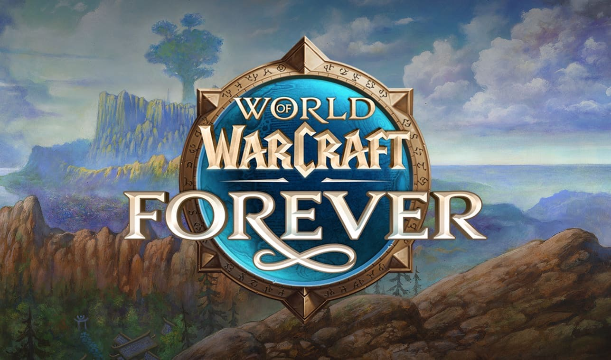

World of Warcraft: Forever announced: Classic+ launches November 4, beta starts September 17
It is official: Classic+ exists, and it is called World of Warcraft: Forever. Blizzard closed the BlizzCon 2026 Opening Ceremony with the reveal. Forever launches on November 4, 2026, included with a regular WoW subscription: a reimagined original Azeroth that stays at level 60 for good, with a new race, new zones, nine new dungeons, new raids, more than 1,000 new quests and a roadmap that already runs into summer 2027. Here is everything Blizzard announced, including all the details.

The short version
- Launch: Wednesday November 4, 2026 at 3:00 p.m. PST, which is 00:00 CET on Thursday November 5 in most of Europe
- Beta: September 17 to October 21, 2026, playable up to level 30
- Price: included with a World of Warcraft subscription or Game Time
- Level cap: 60, permanently, with new content added at 60
- New race: the Skyborne, 29.99 dollars or euros through the Skyborne Heroic Pack
- New race and class combinations: Undead Paladin and Dwarf Shaman
- New zones: Zephras Isle, the Riverglades, Shen'dralas and a renewed Mount Hyjal
- 9 new dungeons, the new Barrow Deeps (10 player) and Hyjal Summit (20 player) raids, plus Onyxia's Lair, all unlocking December 9
- Opt-in transmog, a toggle between original and HD graphics, a new Legacy system, Camping, profession perks and class revamps
- Hardcore is coming to Forever too
The reveal
After Midnight's Eclipse patch and the Warcraft III campaign Forsaken Kingdom, Blizzard turned to the rumors with a simple question: what if we took vanilla and really plussed it up? The cinematic that followed brought back the Dwarf Hunter and his bear from the original World of Warcraft trailer. They travel past Khaz Modan to Dalaran, now free of its dome, to an Undead Paladin calling down the Light, and to Mount Hyjal, where Archimonde's bones still lie on the slopes. Blizzard calls Forever a world that never ends, living alongside modern WoW and WoW Classic, with Azeroth itself as the main character. The story takes place in the first year of original WoW, after Warcraft III and before Molten Core.
Why Forever exists
In the What's Next panel, Ion Hazzikostas told the story behind it. When Classic launched in 2019, part of the community wanted to move on to The Burning Crusade and beyond, which is what happened. Others wanted to stay in that original world forever, but the team of 2020 could not build new content for it. The idea kept growing and became Season of Discovery, an experiment to find out how much change Classic could take. By mid-2024 Blizzard was convinced a permanent version was possible, and players had made it clear they wanted a forever home rather than another temporary season.
What stays Classic, and what does not
Lead Classic Designer Tim Jones set out the rules. Forever is measured against the spirit of the original game. There will be no flying mounts and no level scaling, and Azeroth should stay a dangerous place where preparation and teamwork matter, without being hard for the sake of it. Leveling matters as much as the endgame, and new zones, quests and rewards tell stories at every level. There are no expansions that make your progress worthless; in Blizzard's words, the catch-up system is simply playing the game. And for the long run, nothing is off the table, not even new classes. The team also teased the unfinished stories it has its eye on: Gilneas, Uldum, the Emerald Dream and whatever lies beyond Un'Goro.
New zones

Four regions were introduced. Zephras Isle is the floating home of the Skyborne and a starting experience from level 1 to 12, mixing Classic Warcraft style with architecture inspired by Skywall. The Riverglades is a new Eastern Kingdoms frontier of rivers, grasslands and trade routes, shared by humans, orcs and ogres, with more than 150 quests across roughly levels 30 to 45, new reputations, a neutral goblin port with expanded travel routes and its own dungeon. Blizzard put it nicely: it is not a story about saving Azeroth, it is a story about living there.
Shen'dralas uncovers a long-hidden mystery between Mulgore and Desolace, tied to the Shen'dralar of Dire Maul, Eldre'Thalas and a war between centaur tribes, and gives you new reasons to visit Maraudon and Razorfen Downs. Mount Hyjal becomes an endgame leveling zone about the aftermath of Archimonde's defeat, including Darkwhisper Gorge, with solo and group content, reputations and rewards. It is also home to the Hyjal Summit raid and one of the three entrances to the Barrow Deeps.

The original zones are expanded as well, and they look better without looking different. Clay Stone explained that the art style stays, but lighting and environments get an upgrade: rolling rivers, natural fog and moonlight breaking through the trees. Blizzard showed Ashenvale, Darkshore, Dustwallow Marsh, Felwood, Mulgore and The Barrens.
Nine new dungeons and the first raids
Nora Mills presented the dungeons. For the Alliance there is the Hall of Thanes at level 13 to 18, where the vault has been breached. The Horde gets the ruins of Lordaeron at level 15 to 20, with Scourge still inside, although both factions will find a way into each other's dungeon. Dalaran, no longer hidden behind its barrier, becomes a city dungeon for level 20 to 35 where the Kirin Tor have lost control. The Explorers' League digs into a new Excavation Site in the Wetlands, and The Drowned City is an ancient troll ruin off the coast of Stranglethorn Vale that visitors could already play on the show floor. For level 40 to 60 there are Alcaz Island Prison, The Shaper's Terrace, Krol'Dok Stronghold and the furbolg city of Blackmaw Hold.
Raids unlock on December 9, 2026. Barrow Deeps is the first 10 player raid, with three entrances across the world. The Night Elves keep dangerous prisoners there, including one infamous character that, according to Blizzard, we are not ready to face yet. Hyjal Summit is a 20 player raid on a mountain that is being drained of its power. Next to those, the original 40 player Onyxia's Lair opens on the same day. Add new legendary quests, new tier sets and hundreds of new items, many with on-use effects, while existing items have been made a little stronger and more useful.
The Skyborne

The Skyborne are windswept elves with an elemental touch. Their floating island faces an existential threat, and their shared ancestry has split them into two visions of the future. They are not neutral: you choose a side at character creation. High Order Skyborne join the Alliance, follow the arcane path of the Kirin Tor and can become Mages. Windshaper Skyborne join the Horde, embrace the elements and can become Shamans. Both can play Warrior, Hunter, Rogue and Druid, and Skyborne Druids get unique sky-blue Bear, Cat, Travel and Moonkin forms. Customization looks extensive, with plenty of skin tones, hairstyles, eyes and markings.
Their racials are Walk on Air (glide downward for 10 seconds), Wind Blessed (1% haste), Elemental Insight (5% more damage against Elementals) and a faction racial: Read Ley Line for the Alliance (100% faster Health and Mana regeneration on a ley line) or Skysight for the Horde (10% run speed).
The catch is the price. The Skyborne and Zephras Isle require the Skyborne Heroic Pack, 29.99 dollars or 29.99 euros. It is the first time Blizzard has sold a playable race outside of an expansion.
Undead Paladins, Dwarf Shamans and class revamps
The cinematic already showed it: Forsaken can become Paladins, and Dwarves can become Shamans. Every class and specialization is being revamped with new skills and new talent trees. Talents move away from small +1% and +2% bonuses towards choices that actually change how you play. Paladins, for example, get a new tanking Seal, more group healing and a full set of new Retribution tools. Footage from the show floor also lists Human Hunter, Gnome Priest, Orc Mage and Troll Warlock as new options, but Blizzard has not confirmed those yet.
Racials
Every race now has four racials. Resistance racials are gone, and weapon specializations give critical strike chance instead of weapon skill. A few examples from the demo: Humans get Will to Survive (removes all stuns), Dwarves get Big Game Hunter and a Stoneform that removes poisons and diseases and reduces physical damage, Night Elves get Elune's Light (10% crit for 15 seconds), Gnomes get Eureka! (next 3 spells cheaper and 10% stronger), Orcs get Shatter Curse, Forsaken get Touch of the Grave, Tauren get Plainsrunning and Trolls get Rapid Regeneration. Our Forever page lists all four racials for every race next to the Classic version: https://boostyou.ai/content/wow-forever.html#racials
The Legacy system
Leveling is the heart of Classic, and Forever rewards you for doing it more than once. Legacy Challenges cover exploring, leveling classes, raising tradeskills, earning PvP ranks, maxing reputations and clearing dungeons and raids. Each challenge gives one Legacy Point, which you spend in a tree with Professions, Adventure and Resourcefulness perks that apply to every character on your account. None of them add combat power. Think of Well Rested (rested XP builds faster), Talented (first talent point at level 9), Frequent Flier (cheaper and faster flight paths), Diplomat (more reputation) and For Great Honor (more Honor). Your total points also unlock a reward track with the Replica Ironforge Air Rifle, a Spectral Bear Cub pet, a tabard and the Reins of the Spectral Bear mount.
Transmog and graphics: your choice
Blizzard knows these two split the community, so both are optional. Transmog is opt-in: turn it on to see transmogs, or turn it off and see everyone's real gear. HD or original SD graphics for characters, models and the world can be toggled as well.
Camping, professions and PvP
Camping is a new tradeskill system: you build a campsite out in the world, other players join, and you use your professions to buff each other. Professions themselves get perks for the first time, such as Philosopher's Stone for Alchemists, Belt Buckles and Repair All for Blacksmiths, ring enchants for Enchanters and extra health for Miners. PvP brings back the original battlegrounds and adds the Darkspear Islands, a 15v15 battleground in the style of Eye of the Storm with Arathi Basin capture points, plus an updated Honor system. Riding skill updates, a new legendary and gamepad support are also on the list.
Hardcore
Blizzard confirmed that Hardcore is coming to World of Warcraft: Forever. The details are saved for the World of Warcraft Hardcore: What's Next panel on September 13.
The roadmap
Blizzard described its plan as fast-paced production for a slow-paced game. Autumn 2026 has the beta from September 17, name reservation from October 27 and launch on November 4. Winter 2026 unlocks the raids on December 9. Spring 2027 brings two new raids (10 and 20 player), two dungeons, new quests with a new playable area, a new legendary questline and a PvP season refresh. Summer 2027 brings a revamped iconic raid, another new raid, expanded world content, two more dungeons, a PvP refresh and Professions and Legacy updates.
Editions and price
Playing Forever costs nothing beyond your subscription. Three optional digital editions are on the Battle.net Shop. The Skyborne Heroic Pack (29.99) unlocks the Skyborne and Zephras Isle, Early Name Reservation, the Cerulean Prideclaw mount, the Shen'dorei Skyseer's Garb, the Veteran Adventurer's Rucksack, the Shen'dorei Windwell toy, Skyborne housing decor for modern WoW and one Invite-A-Friend code. The Skyborne Epic Pack adds beta access, 30 days of Game Time, the Loyal Companion mount, the Outdoor Wear set, Zergling, Panda, Diablo and Pachimari pets, two tabards and two extra invite codes. The limited Warcraft Forever Collection adds Warcraft III: Reforged, the Forsaken Kingdom campaign and Forsaken and Human figurine decor, and is available until January 11, 2027.

There is also a physical Collector's Edition in the Blizzard Gear Store, with the Warcraft Forever Collection code, a 13-inch Dwarf and Bear statue, a Zephras Isle mousepad, art prints, pins and a companion journal.
Bring a friend for launch week
Invite-A-Friend codes arrive by email from October 20. A friend who redeems one can play Forever from November 4 to 11 without a subscription or Game Time, which is a nice way to get your old guild back together for launch. Name reservation runs from October 27 to November 3 for up to three characters, and in Forever every character has a Main Name and a Secondary Name.
Forsaken Kingdom
The story starts in Warcraft III. Warcraft III Reforged: Forsaken Kingdom came out on September 12: more than 30 hours of campaign about the fall of Lordaeron, the founding of the Undercity and the first Forsaken Paladin, with definitive edition graphics, a Forsaken Paladin neutral hero and world editor improvements. You can buy it on its own or get it in the Warcraft Forever Collection.
What this means if you love leveling
Forever is great news for anyone who reads this site: the 1 to 60 journey is the core of the game again, a thousand new quests change the routes, and the Legacy system makes every extra character faster. Until November 4, the Classic realms are the best place to warm up, and our leveling routes and 757 BiS lists cover them all: https://boostyou.ai/content/fast-leveling.html
Everything in one place
We collected every date, zone, dungeon, raid, racial, Legacy perk, edition and FAQ on one page, and we will keep it updated during the beta: https://boostyou.ai/content/wow-forever.html
Sources: Blizzard's World of Warcraft: Forever page https://worldofwarcraft.blizzard.com/en-gb/forever and pre-purchase announcement https://worldofwarcraft.blizzard.com/en-us/news/24301508, the BlizzCon 2026 panels, and Wowhead's What's Next liveblog https://www.wowhead.com/news/world-of-warcraft-forever-whats-next-liveblog-382824